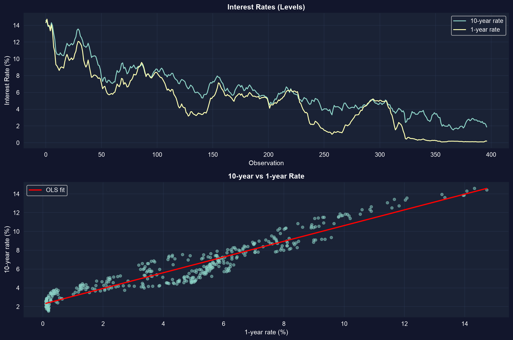
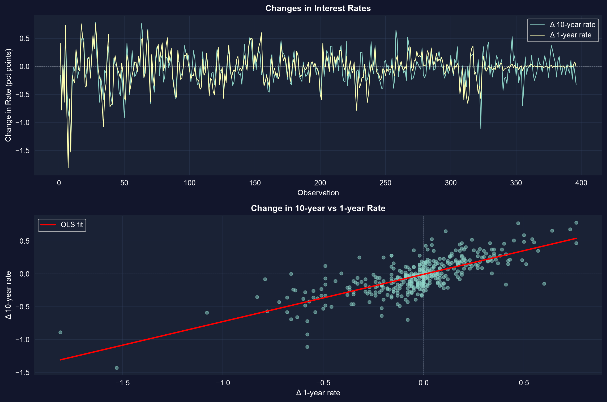

Where basic regression runs out
Act I · Panel data
One line through a scatter isn’t always enough
A single cross-section can’t separate who a unit is from what changed for it, and a single time series can’t tell a trend from a relationship.
This capstone extends OLS along three axes: panel data (units across time), time series (order and memory), and causation (from association to effect).
Where we’re going
- Panel data — the same units over time; split variation within vs between
- Fixed effects — control for everything time-invariant about a unit
- Logit — regression when the outcome is 0/1
- Time series — autocorrelation, spurious trends, and HAC standard errors
- Dynamics — AR and distributed-lag models: today depends on yesterday
- Causation — endogeneity, instrumental variables, and the identification toolkit
Six ideas anchor this chapter
- Panel data — observations indexed by unit \(i\) and time \(t\)
- Within estimator — de-mean each unit to erase its fixed traits \(\alpha_i\)
- Logit — squeeze \(x'\beta\) through an S-curve into a probability in \([0,1]\)
- AR(\(p\)) — regress \(y_t\) on its own past; persistence and momentum
- ADL — add current and lagged \(x\); sum the \(\gamma\)’s for the long-run effect
- Hausman test — FE vs RE: a big gap rejects random effects
Each frontier is the same question — what is really driving \(y\)? — asked under harder conditions.
Panel data is double-indexed: unit \(i\), time \(t\)
29 NBA teams over 10 seasons (2001–02 to 2010–11): 286 team-seasons of revenue and wins.
\[y_{it} = \alpha_i + \beta\,x_{it} + \varepsilon_{it}\]
Total variation splits in two: between teams (big-market vs small-market, SD of \(\ln\)revenue \(\approx 0.21\)) and within a team over time (SD \(\approx 0.11\)). Which piece your estimator uses decides what it means.
Pooled OLS needs cluster-robust standard errors
!pip install -q pyfixest # pyfixest is not preinstalled in Colab (-q = quiet)
import pandas as pd # tabular data
import pyfixest as pf # fast OLS / FE / IV with robust & cluster SEs
url = "https://raw.githubusercontent.com/quarcs-lab/data-open/master/AED/AED_NBA.DTA"
data_nba = pd.read_stata(url) # 29 teams × 10 seasons = 286 team-seasons
# cluster SEs by team: observations for one team are correlated over time
fit_pool = pf.feols("lnrevenue ~ wins", data=data_nba, vcov={"CRV1": "teamid"})
fit_pool.summary() # wins coef 0.0068, cluster SE 0.0019, t 3.54
# default (non-clustered) SE would be ~1.8x too small → overstated significancePooled wins-revenue line mixes two very different comparisons

Each dot is a team-season. The upward line pools across teams and over time — it partly credits winning for market size.
Big-market teams both win more and earn more, so the pooled slope is confounded. We need to hold the team constant.
Fixed effects: compare a team only to itself
import pyfixest as pf # (data_nba already loaded above)
# "| teamid" absorbs a separate intercept per team: the within (de-meaning) estimator
fit_fe = pf.feols("lnrevenue ~ wins | teamid", data=data_nba, vcov={"CRV1": "teamid"})
fit_fe.summary() # wins coef 0.0045 (was 0.0068 pooled)
# α_i soaks up market size, brand, arena → identified from a team's good vs bad years
# within R² ≈ 0.19; +1 win ≈ +0.45% revenue (t ≈ 5.3)The coefficient shrinks 33% — that gap was omitted-variable bias
- Pooled OLS: \(\hat\beta_{\text{wins}} = 0.0068\) — mixes within and between variation.
- Fixed effects: \(\hat\beta_{\text{wins}} = 0.0045\) — within-team only; market size is absorbed into \(\alpha_i\).
- The 33% drop is the confound: persistent team traits correlated with both wins and revenue.
FE trades cross-sectional information for a far more credible within-team causal reading.
FE or RE? The Hausman test decides
Random effects is more efficient — but only if \(\alpha_i\) is uncorrelated with the regressors.
FE is consistent either way (it allows arbitrary correlation); RE adds efficiency only when its assumption holds. The Hausman test compares the two: a significant gap — as in the NBA panel, where big-market teams both win and earn — rejects RE. Default to FE for observational data.
Logit: regression when the outcome is 0 or 1
import pandas as pd # statsmodels/scipy are preinstalled in Colab
from statsmodels.formula.api import logit # logit with R-style formulas
url = "https://raw.githubusercontent.com/quarcs-lab/data-open/master/AED/AED_EARNINGS_COMPLETE.DTA"
data = pd.read_stata(url) # 842 full-time workers, 2010
data["dbigearn"] = (data["earnings"] > 60000).astype(int) # 1 if high earner (~27%)
m = logit("dbigearn ~ age + education", data=data).fit(disp=0) # logistic CDF keeps p in [0,1]
print(m.get_margeff().summary()) # coefficients ≠ marginal effects
# ME of education at the means ≈ 0.05 → +5 pts of P(high earner) per year of schoolingLogit coefficients must be converted to marginal effects; here they match the linear-probability model in sign and size — but never stray outside \([0,1]\).
Time series: order and memory
Act II · Time series
Trending series can fake a relationship

U.S. Treasury rates, monthly 1982–2015: both the 10-year and 1-year rate drift from ~14% to ~2%.
When two series share a trend, a levels regression gives a huge \(R^2\) that may be spurious — shared time, not a structural link.
Levels look great — and that should worry you
import pandas as pd, numpy as np, pyfixest as pf # all preinstalled except pyfixest
url = "https://raw.githubusercontent.com/quarcs-lab/data-open/master/AED/AED_INTERESTRATES.DTA"
data = pd.read_stata(url) # monthly 10-yr (gs10) & 1-yr (gs1) rates
data["time"] = np.arange(len(data)) # linear time index for the trend
fit = pf.feols("gs10 ~ gs1 + time", data=data) # levels regression → R² ≈ 0.95 (!)
# Newey-West HAC SEs: valid under autocorrelation; 24 monthly lags = 2 years
fit_hac = pf.feols("gs10 ~ gs1 + time", data=data,
vcov="NW", vcov_kwargs={"time_id": "time", "lag": 24})
print(fit.se()["gs1"], fit_hac.se()["gs1"]) # HAC SE is ~3x the default SEA near-perfect \(R^2\) plus a HAC SE three times the default is the classic fingerprint of a spurious levels regression.
The correlogram exposes autocorrelation
from statsmodels.tsa.stattools import acf # autocorrelation function (preinstalled)
data["uhat"] = fit._u_hat # residuals from the levels regression
rho = acf(data["uhat"].dropna(), nlags=10) # autocorrelation at lags 0..10
print(rho[1]) # lag-1 ≈ 0.95 — residuals almost unchanged
# slow decay (lag 10 still > 0.4) ⇒ near-unit-root; OLS inference is invalid
Bars decay slowly and sit far outside the confidence band — significant autocorrelation at nearly every lag.
First differencing restores stationarity

Modeling changes (\(\Delta\)rate) instead of levels: the trend is gone and the series fluctuates around zero.
Differencing drops residual lag-1 autocorrelation from \(\rho_1 \approx 0.95\) to \(\approx 0.25\). In changes, a 1-point move in the 1-year rate maps to a \(\approx 0.72\)-point move in the 10-year rate.
Rates have memory: AR and distributed lags
The ADL(2,2) model regresses \(\Delta\text{gs10}_t\) on its own lags and current + lagged \(\Delta\text{gs1}_t\):
\[\Delta y_t = \beta_0 + \sum_{j=1}^{2}\alpha_j \Delta y_{t-j} + \sum_{j=0}^{2}\gamma_j \Delta x_{t-j} + u_t\]
Contemporaneous pass-through \(\gamma_0 \approx 0.74\); summing the \(\gamma\)’s gives a two-month multiplier \(\approx 0.53\) — over half of a short-rate shock reaches the long rate within two months (the long-run multiplier).
From association to cause
Act III · Causation
OLS is biased the moment \(x\) correlates with the error
In \(y = \beta_1 + \beta_2 x + u\), OLS needs \(E[u \mid x] = 0\). Three things break it:
- Omitted variables — a confounder drives both \(x\) and \(y\)
- Measurement error — a mis-measured \(x\) attenuates the slope
- Simultaneity — \(y\) also causes \(x\) (reverse causation)
Adding more control variables does not fix endogeneity — you need an identification strategy.
Instrumental variables: borrow exogenous variation
An instrument \(z\) must satisfy two conditions, and pyfixest estimates it with a | x ~ z term:
import pyfixest as pf # IV / 2SLS via the formula syntax
# relevance: Corr(z, x) ≠ 0 (testable) · exogeneity: Corr(z, u) = 0 (must be argued)
fit_iv = pf.feols("y ~ 1 | x ~ z", data=df) # regress y on x, instrumenting x with z
fit_iv.summary() # β_IV = Cov(z,y) / Cov(z,x): consistent when OLS is notRelevance can be tested; exogeneity cannot — it rests on an economic argument you must defend.
The causal toolkit — pick the design the data allows
- RCT — random assignment makes treatment independent of outcomes (gold standard)
- IV — an instrument that moves \(x\) but not \(y\) directly
- Fixed effects — absorb time-invariant confounders
- Difference-in-differences — before/after, treated vs control
- Regression discontinuity — exploit a threshold assignment rule
Credible causal inference comes from a convincing design, not from piling on controls.
What to carry forward
- Panel: cluster by unit; fixed effects erase time-invariant confounders using within variation.
- Nonlinear: logit keeps probabilities in \([0,1]\); read it through marginal effects.
- Time series: watch for non-stationarity and autocorrelation — difference, or use HAC SEs.
- Dynamics: AR and ADL models capture persistence; sum the lags for the long-run effect.
- Causation: OLS needs \(E[u\mid x]=0\); IV, DiD, RD, and FE are ways to earn a causal claim.